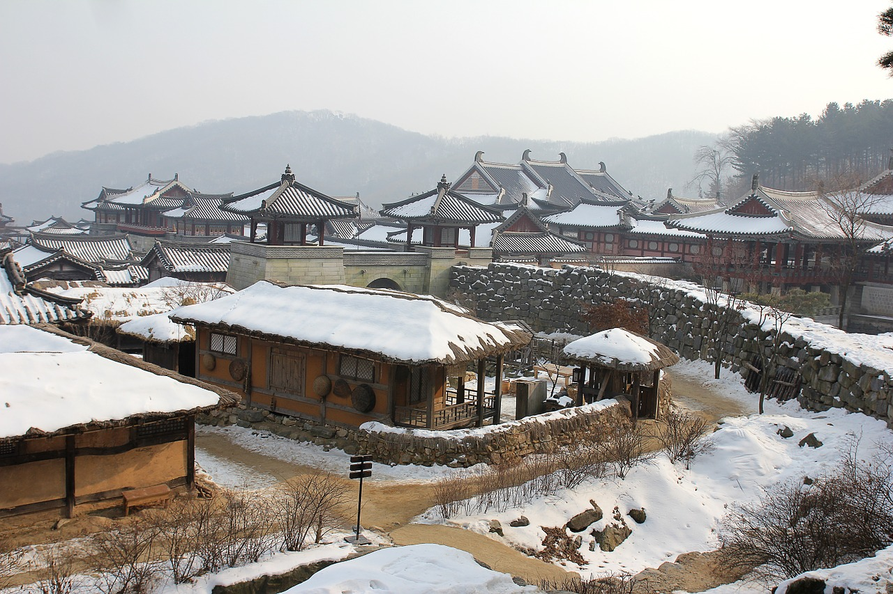

한국어(韓國語) 또는 조선말(朝鮮말)은, 대한민국과 조선민주주의인민공화국의 공용어로,
대한민국에서는 한국어라고 부르고, 조선민주주의인민공화국에서는 조선말, 중화인민공화국과 일본에서는
조선어(朝鮮語)라고 부르며, 러시아와 중앙아시아의 고려인들 사이에서는 고려말(高麗말)이라고 부른다.

19세기 중반 이후 한반도와 주변 정세의 혼란, 20세기 전반 일본 제국의 침략, 20세기 후반 대한민국의 해외 이민 등의 요인으로 중화인민공화국, 일본, 러시아, 우즈베키스탄, 미국, 캐나다, 오스트레일리아, 필리핀, 베트남 등 세계 여러 지역에 한민족이 이주하면서 이들 한민족이 거주하는 지역에서도 한국어가 사용되고 있다. 2016년 1월 초 기준으로 한국어 사용 인구는 약 7,720만 명으로 추산된다.